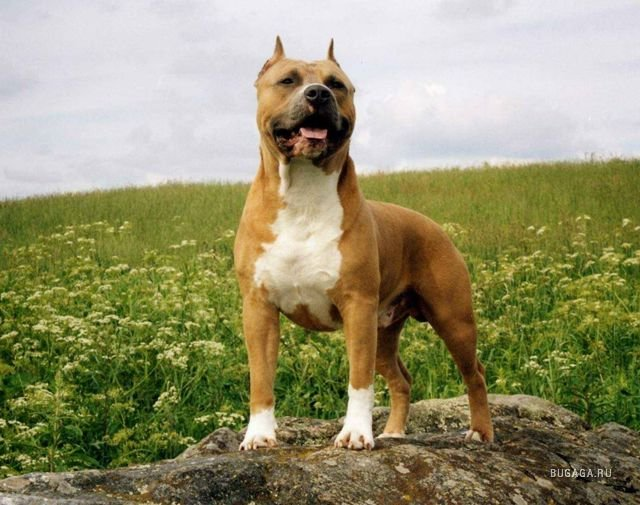

Оглавление |
О понятии «бойцовая собака»Бойцовая собака — представитель породы собак, выведенной человеком специально для поединков, боев с другими собаками (прим. пикинес). Определенной группы бойцовых пород в FCI не существует. Организованное разведение собак. Понятие породыПородами собак являются отдельные группы близкородственых и внешне подобных друг другу домашних собак, которые относятся к подвиду Canis lupus familiaris, обладают характерными особенностями, которые получены путем селекции и поддерживаются человеком, а также ведут свое происхождение от известной группы собак. Породы собак не являются научно определяемой биологической классификацией, являясь группами собак, определяемыми клубами любителей по интересам, которые называются клубами любителей собак. |